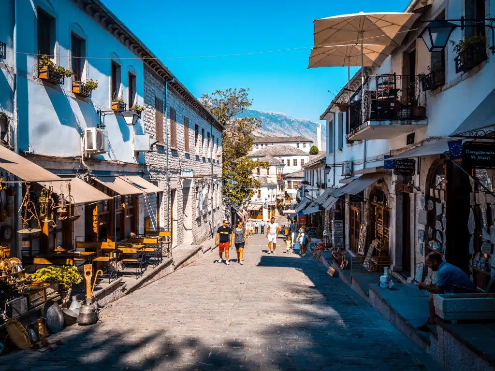
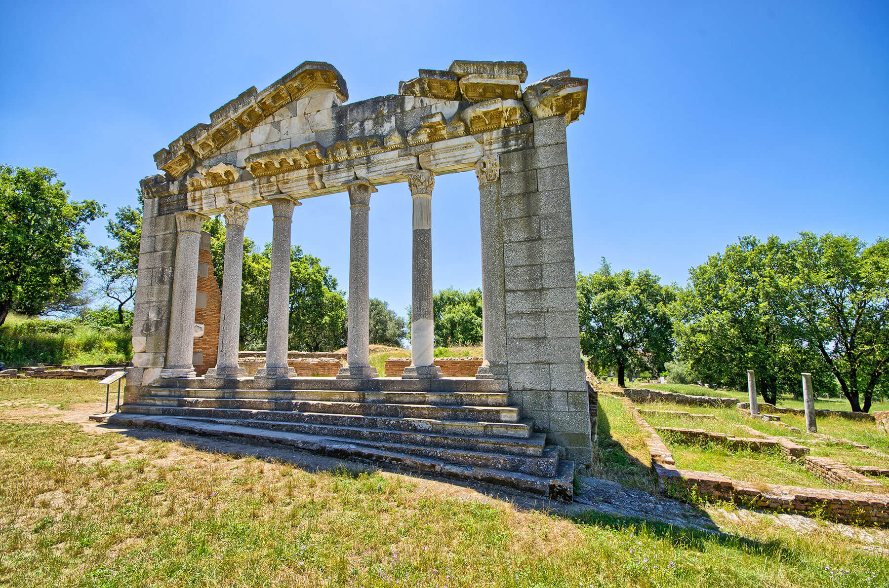

Ksamili ndodhet në jug të qytetit të Sarandës, në dalje të rrugës për në Butrint dhe është pjesë e Rrethit të Sarandës. Qyteti i Ksamilit është i rrethuar nga uji, me detin Jon në Perëndim dhe në brendësi liqeni mahnitës i qytetit të vjetër të Butrintit. Ai përbën një nga perlat e natyrës shqiptare. Me vijë bregdetare të larmishme me gjire, kepa, ishuj, shkëmbinj, me monumente kulture, me Butrintin dhe Sarandën afër dhe rrugën detare nga Greqia në Itali, ky vend ofron një turizëm elitar.
Gjirokastra, pjesë e trashëgimisë botërore, është një qytet i veçantë në jug të Shqipërisë, ndërtuar në shpatet e pjerrëta, me shtëpitë prej guri që duket sikur janë ngritur mbi njëra-tjetrën. Aty gjendet pazari dhe kalaja më e vjetër e gjithë Ballkanit së bashku me shtëpitë më të famshme në vend, si ajo e fëmijërisë së Ismail Kadaresë apo Enver Hoxhës, por edhe të familjeve të tjera vendase të shquara, në rrugët me kalldrëm të këtij qyteti. Nga faqja e këtij mali ajo shtrihet deri në buzën e lumit Drino, i cili krijon një luginë shumë të bukur në anën lindore të qytetit.

I njohur si “Qyteti i një mijë dritareve”, Berati të tërheq me arkitekturën unike, kalatë mbi qytet dhe muzeumet që tregojnë historinë shekullore. Shëtitja mes rrugicave të ngushta dhe shtëpive të bardha është si një udhëtim në kohë.Qendra urbane pasqyron një traditë popullore banimi të Ballkanit, shembujt e së cilës datojnë kryesisht nga fundi i shekullit të 18-të dhe 19-të. Kjo traditë i përshtatet stileve të jetesës së qytetit, me shtëpi me nivele në shpatet malore, të cilat janë kryesisht horizontale në planimetri dhe me ndriçim natyral nga të gjitha anët.

Peizazhe të pabesueshme me male të thepisura, ujëvara dhe fshatra tradicionale që ruajnë stilin e jetesës së lashtë. E mrekullueshme për trekking, natyrë të paprekur dhe aventura jashtë rrugëve të zakonshme.Bukuritë e papërsëritshme të këtij fshati malor në zemër të Alpeve Shqiptare e bëjnë Thethin që të zërë një vend të rëndësishëm në natyrën dhe turizmin shqiptar. Në bukuritë e rralla të vendit tonë, futet dhe Thethi. Ai gjendet në mes të Alpeve me një bukuri mahnitëse, në Veri të Shqipërisë, shtatëdhjetë kilometra nga qyteti i Shkodrës, i mbrojtur nga tre malet Radohima, Sheniku, Papluku, me lartësi mbi 2500m mbi nivelin e detit. Lugina e lartë e Thethit, një nga zonat më të veçanta të këtyre alpeve, ndodhet 750 deri 950 m mbi nivelin e detit, me një sipërfaqe prej 2630 hektarësh. Historia e Thethit dhe e Shalës është e lidhur me atë të fisit ilir të Labeatëve.

Rrënoja antike dhe qytete historike të zhytura në natyrë. Apollonia të çon në një udhëtim në kohën e Romës së lashtë, ndërsa Butrinti ofron një kombinim magjepsës të historisë dhe ekosistemit unik të liqenit dhe detit.Parku Arkeologjik Apollonia ndodhet në jugperëndim të Shqipërisë, vetëm 12 kilometra larg Fierit, mbi një pllajë kodrinore që ofron pamje të gjera të fushës pjellore të Myzeqesë dhe detit Adriatik. Në Apolloni ruhen monumente të shumta historike, duke përfshirë Odeonin, bibliotekën, portikun, vilat me mozaikë, manastirin e Shën Mërisë dhe kishën bizantine të shekullit XIV. Qyteti ka qenë edhe një pikë kyçe në rrugën transbalkanike Via Egnatia, ku u stërvit edhe perandori romak Oktavian. Bukuria natyrore dhe ruajtja e mirë e rrënojave e bëjnë Apollonin një vend të veçantë për studime arkeologjike dhe vizita turistike.

Qytet historik i rrethuar nga male, me Kështjellën e Krujës dhe tregun tradicional që ofron suvenire dhe artizanat unik. Një destinacion ideal për ata që duan të përjetojnë historinë shqiptare dhe traditën e gjallë kulturore.I vetëshpallur si kryeqyteti historik dhe turistik i vendit, Kruja të ofron ndjesinë e dykohësisë mes periudhës së lavdishme të Skënderbeut dhe realitetit të sotëm. Kruja jeton mijëvjecarin e saj të tretë në historinë antike, mesjetare dhe moderne. Sot ajo banohet nga rreth 15 mijë banorë dhe simbol i jetës së tyre është kalaja e lashtë, me rrënjë të thella në histori.